Monitoramento em Tempo Real e Control Plane do watsonx Orchestrate
Navegue pelas abas do dashboard do Agentic Control Plane e crie um Controle de Content Guardrails para bloquear conteúdo impróprio.
Visão Geral
Este laboratório apresenta os recursos de monitoramento em tempo real disponíveis no watsonx Orchestrate.
Ao longo das atividades, você vai aprender a acompanhar o desempenho dos agentes e consultar as métricas por linguagem natural através do assistente integrado ao painel de controle.
O monitoramento contínuo é essencial para garantir a eficiência dos agentes em produção, identificar comportamentos inesperados e agir proativamente na resolução de problemas antes que eles impactem a experiência dos usuários.
Este laboratório apresenta o Agentic Control Plane do watsonx Orchestrate, um conjunto de painéis e ferramentas que reúne, em um só lugar, a visão de adoção, custos, qualidade, confiabilidade e segurança dos seus agentes.
Ao longo das atividades, você vai navegar pelas diferentes abas do dashboard e criar um Controle de Content Guardrails para bloquear conteúdo impróprio nas interações de um agente.
Conhecer essas ferramentas é essencial para operar agentes de IA com confiança, permitindo identificar rapidamente pontos de atenção, investigar comportamentos inesperados e aplicar salvaguardas antes que um agente seja exposto a usuários reais.
Explorando o Dashboard do Control Plane
Vamos conhecer o painel de controle de monitoramento do watsonx Orchestrate. Ao acessar o ambiente da sua instância do watsonx Orchestrate, você pode ver um aviso apresentando os novos dashboards do Agentic Control Plane, que reúnem em um só lugar as métricas de mensagens, implantação, avaliação, agentes e controles referentes à sua instância.
Feche o aviso clicando em Maybe later, para ver o dashboard completo.
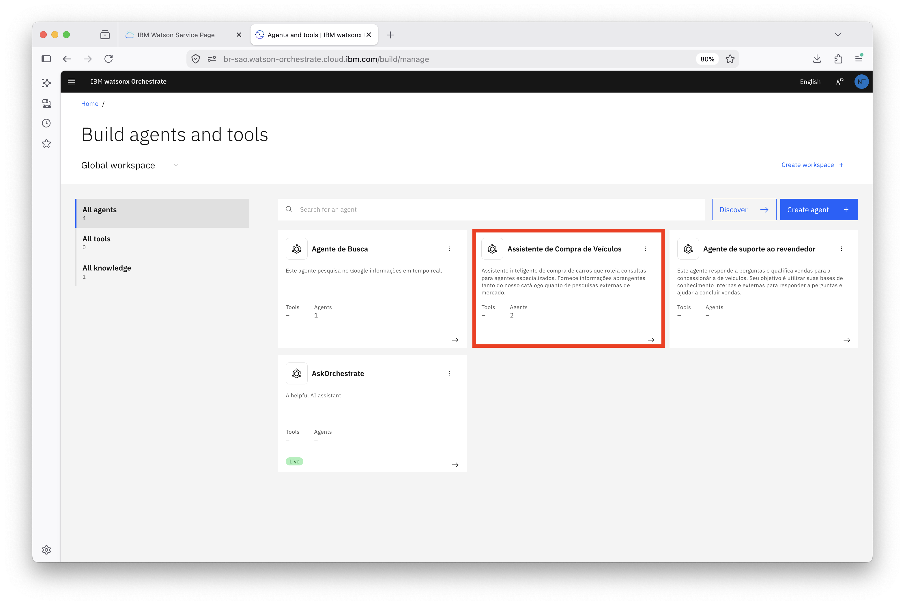
Ao acessar o ambiente da sua instância do watsonx Orchestrate, você chega diretamente ao dashboard do Agentic Control Plane, com uma saudação personalizada e um resumo de quantos agentes estão em produção (Live) e quantos usuários interagiram com eles nos últimos 30 dias.

Clique no ícone circular de IA, no canto inferior esquerdo, para abrir o assistente do painel de controle. Ele oferece sugestões prontas, como identificar pontos de atenção de performance, lacunas de cobertura de testes e investigar feedback negativo, além de um campo para perguntas livres em linguagem natural.

Overview: visão geral do ambiente
A aba Overview, selecionada por padrão, reúne seis cartões de resumo: Messages, Feedback, Deployment status, Evaluation status, Agents e Controls, cada um com a taxa de sucesso ou a distribuição relevante da última semana. À direita, o painel Needs attention já aponta o que precisa da sua atenção, agrupado por categoria (Evaluation, Adoption, Credentials, Execution e Quality), sem que você precise procurar manualmente.

Role a página para baixo para ver as seções Usage trends e Operational trends, com gráficos de usuários ativos, agentes ativos, mensagens, uso de tokens, taxa de falha, conversas com erro e latência P50 ao longo dos últimos sete dias.

Em seguida, digite a pergunta abaixo no campo de mensagem do assistente.
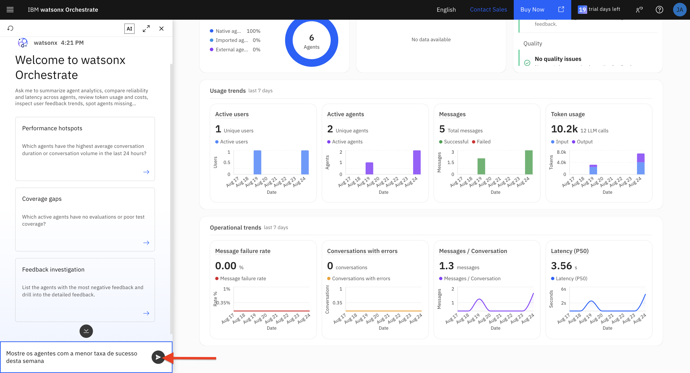
O assistente responde diretamente, sem que você precise navegar por gráficos. Nesse caso, ele identificou o AskOrchestrate como o agente com a menor taxa de sucesso da semana, zero por cento, detalhando o total de conversas e quantas delas falharam. Clique em Show Reasoning caso queira ver como o assistente chegou a essa conclusão, e use os ícones de joinha para avaliar a resposta.
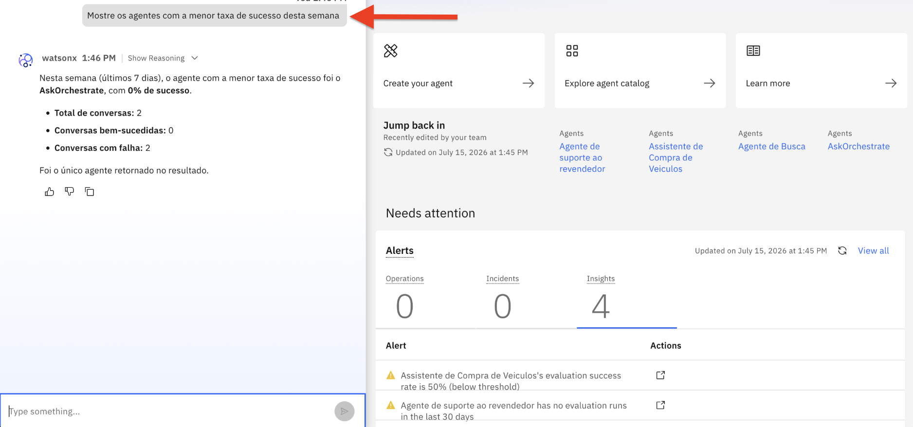
Adoption: engajamento e uso dos agentes
Volte ao topo da página e clique na aba Adoption.
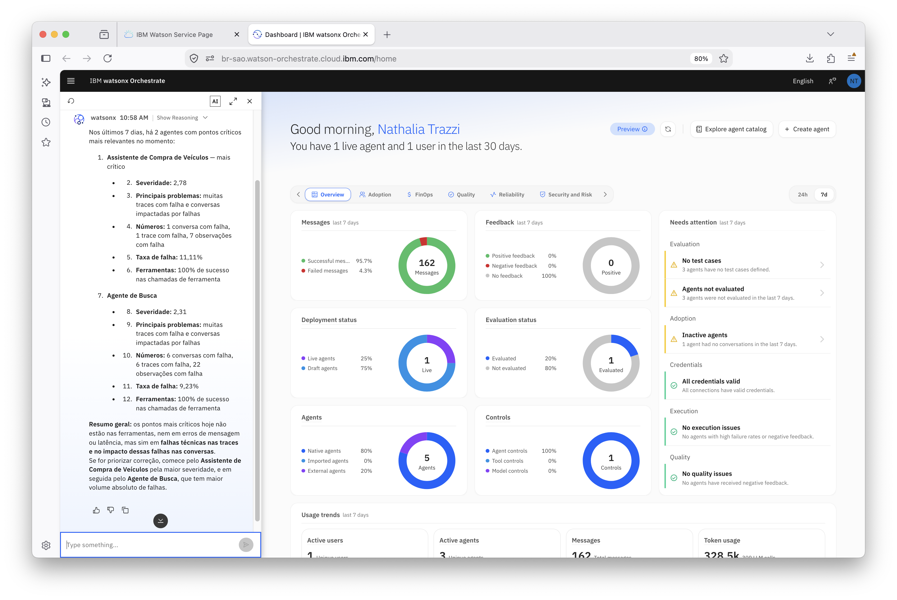
A seção Engagement depth mostra a relação entre usuários, conversas e chamadas de modelo, como usuários por agente, conversas por usuário, mensagens por conversa e chamadas de LLM por conversa. Logo abaixo, a tabela Agent analytics detalha, por agente, o número de conversas, usuários únicos, duração média, tokens consumidos, chamadas de LLM, taxa de erro e latência P95.

A tabela também traz uma legenda de cores para interpretar rapidamente a taxa de erro e a latência de cada agente, além de paginação para instâncias com muitos agentes.
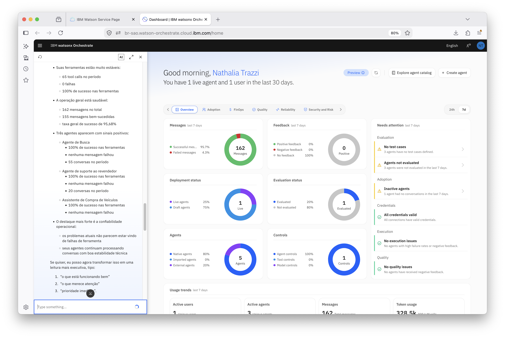
Role a página para ver o gráfico Adoption trends, que compara conversas, usuários ativos e agentes ativos ao longo do tempo, e o painel Model usage distribution, que mostra quantos modelos estão em uso e quantos agentes utilizam cada um deles.
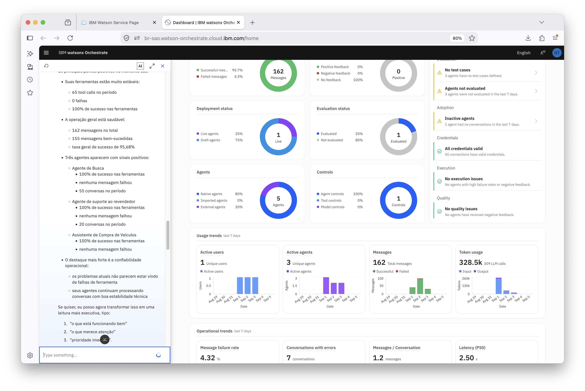
FinOps: consumo de tokens
Volte ao topo e clique na aba FinOps.

O Token summary resume o total de tokens consumidos na semana, com a divisão entre tokens de entrada e saída e o número de chamadas de LLM. Logo abaixo, Token usage permite alternar a visão By agent ou By model e traz um gráfico de rosca com a distribuição percentual de tokens entre os agentes, complementado por uma tabela detalhada.
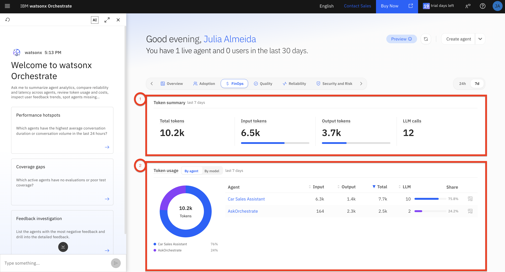
Role a página para ver Token trends, com pílulas de alternância para Total, Input e Output tokens ao longo dos últimos sete dias.

Quality: qualidade das respostas
Volte ao topo e clique na aba Quality.

A seção Insights mostra quantos agentes já possuem avaliações configuradas, o total de feedback de usuários (positivo e negativo) e as métricas de Helpfulness score e Hallucination score. A tabela Agent feedback detalha, por agente, o total de mensagens, mensagens com falha, feedback positivo e negativo, e a proporção de feedback positivo.
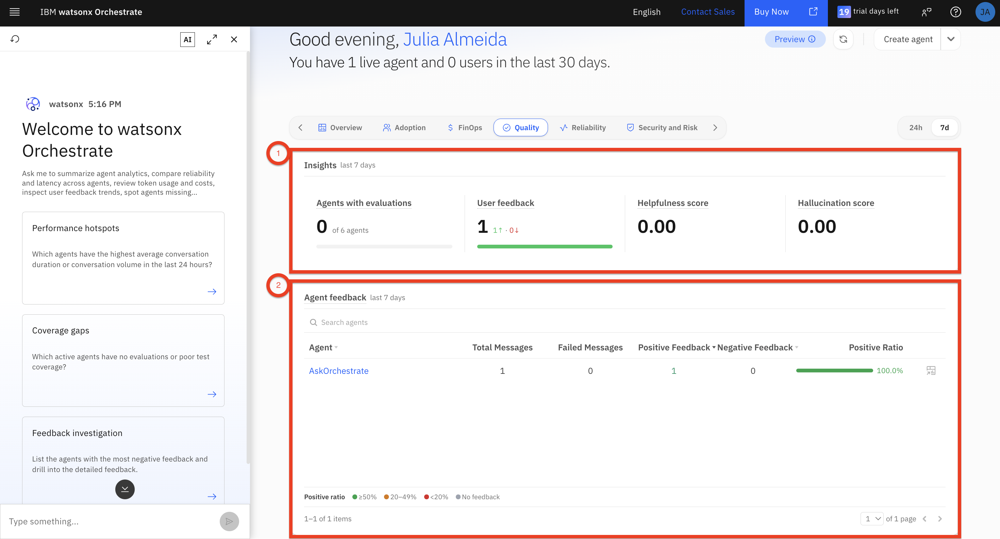
Role a página para ver três painéis lado a lado: Top agents by positive feedback, Top agents by negative feedback e Tool call success, seguidos pelo gráfico Feedback trends, que permite alternar entre mensagens totais, bem-sucedidas, com falha, feedback positivo e negativo.

Reliability: confiabilidade e desempenho
Volte ao topo e clique na aba Reliability.

A seção Utilization mostra, na janela de sete dias, quantos modelos estão ativos, a média de mensagens por conversa, mensagens por agente ativo e quantos agentes estão sob carga com falhas de trace. A tabela Agent latency detalha, por agente, mensagens, mensagens com falha, taxa de erro e as latências P50, P95 e P99.

Role a página para ver Deployment readiness (total de chamadas de ferramenta, conversas com falha e latência P95), Runtime inventory (contagem de agentes, toolkits, tools e bases de conhecimento) e os gráficos Latency trends e Failed messages over time.
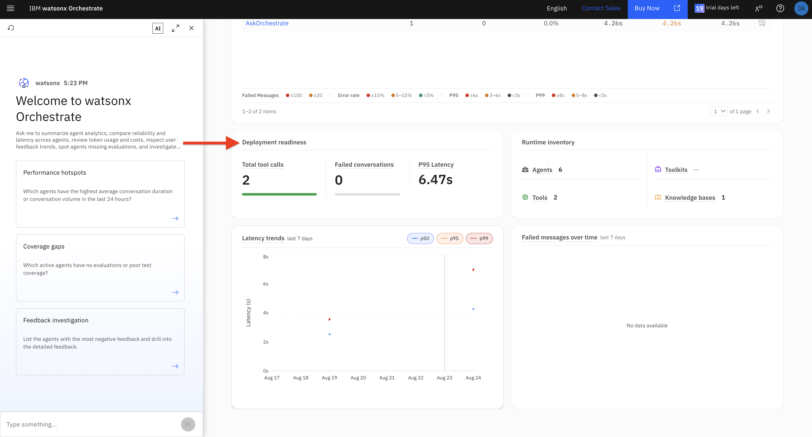
O painel Runtime inventory dá um retrato rápido de tudo o que está publicado na sua instância: agentes, toolkits, tools e bases de conhecimento.
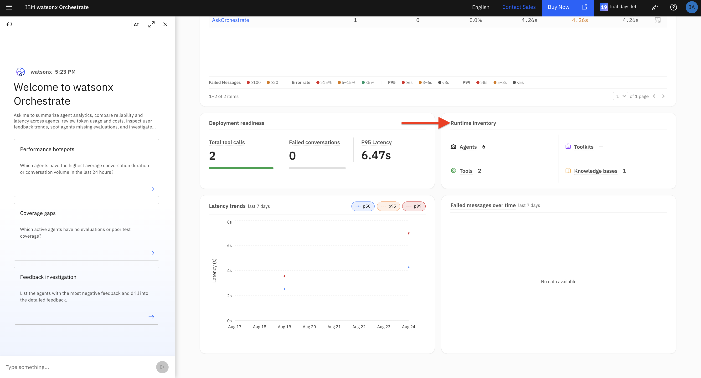
Já o gráfico Latency trends permite alternar entre os percentis P50, P95 e P99 para identificar picos de latência ao longo da semana.
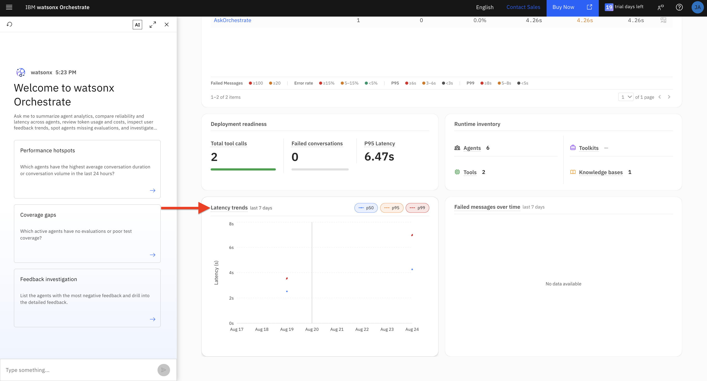
Security and Risk: controles de segurança
Volte ao topo e clique na aba Security and Risk.
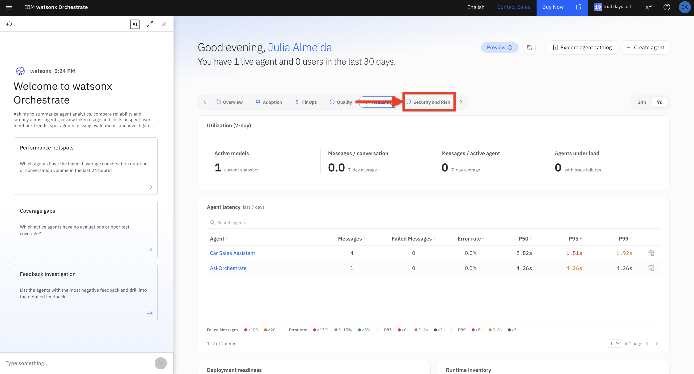
Essa aba resume o painel Controls summary, com o total de controles configurados na instância e sua divisão entre Agent controls, Tool controls e Model controls, além da lista Recent controls. Como você ainda não criou nenhum controle, todos os contadores aparecem zerados; isso muda na última parte deste laboratório, quando você criar seu primeiro controle.

Ao voltar para a aba Overview, um tour guiado pode aparecer sugerindo navegar pelas demais abas usando a seta > ao final da barra de abas. Sinta-se à vontade para explorar as abas adicionais por conta própria.

Entendendo as Métricas:
Métricas de Feedback do Usuário:
Thumbs up: Número de respostas de feedback positivo dos usuários indicando satisfação com a resposta do agente.
Thumbs down: Número de respostas de feedback negativo dos usuários indicando insatisfação com a resposta do agente.
Not rated: Número de interações onde os usuários não forneceram feedback.
Toxicity: Pontuação indicando o nível de conteúdo tóxico, ofensivo ou inapropriado na resposta (0.00 = nenhuma toxicidade detectada).
Input PII: Pontuação indicando se informações pessoalmente identificáveis foram detectadas na entrada do usuário (0.00 = nenhuma PII detectada).
Output PII: Pontuação indicando se informações pessoalmente identificáveis foram detectadas na resposta do agente (0.00 = nenhuma PII detectada).
Criando um Controle de Content Guardrails
Abra o menu lateral e, em Manage, selecione Controls para acessar a área de criação de controles.
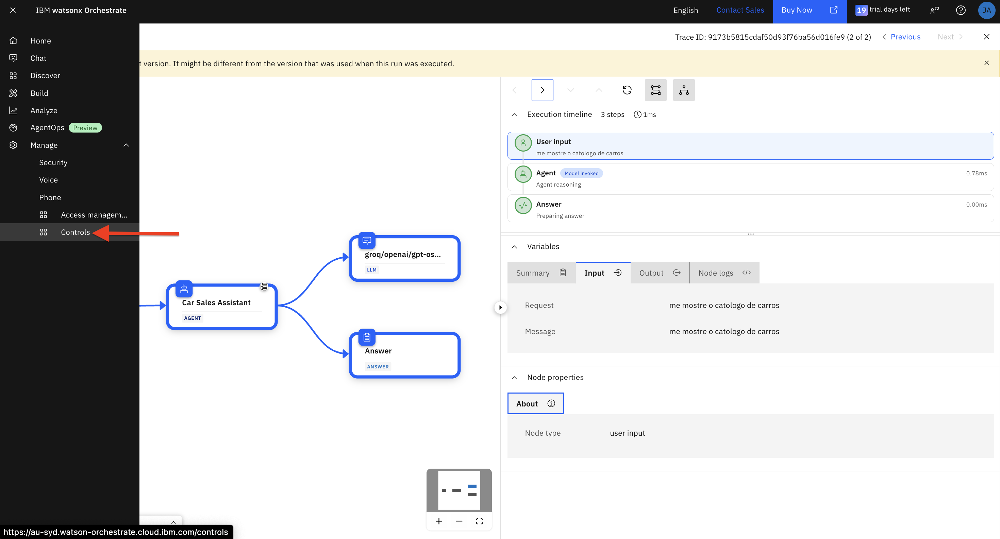
Como nenhum controle foi criado ainda, a página Controls aparece vazia, com uma mensagem de boas-vindas explicando que os controles ajudam a impor regras sobre o comportamento de agentes, modelos e ferramentas MCP. Clique em Create Control.
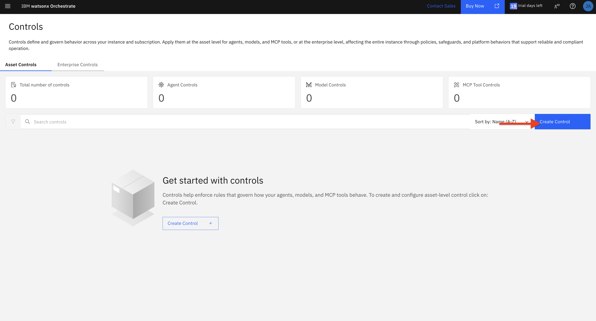
Selecionando o tipo de controle
A janela Create Control se abre com um assistente de quatro etapas: Select Control, Configure Control, Assign Assets e Review. Na primeira etapa, os controles disponíveis são organizados por tipo de ativo: Agents (Content Guardrails, Output Length Guard, Regex Pattern, Secrets Detector e PII Filter) e Tools (Content Guardrails, Output Length Guard, Rate Limiter, SQLSanitizer e Secrets Detector).
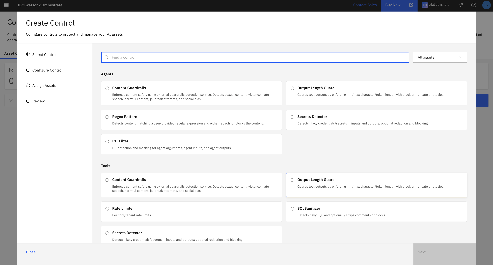
Selecione Content Guardrails, na seção Agents. Essa opção aplica um serviço externo de detecção de conteúdo para identificar conteúdo sexual, violência, discurso de ódio, conteúdo prejudicial, tentativas de jailbreak e viés social. Clique em Next.
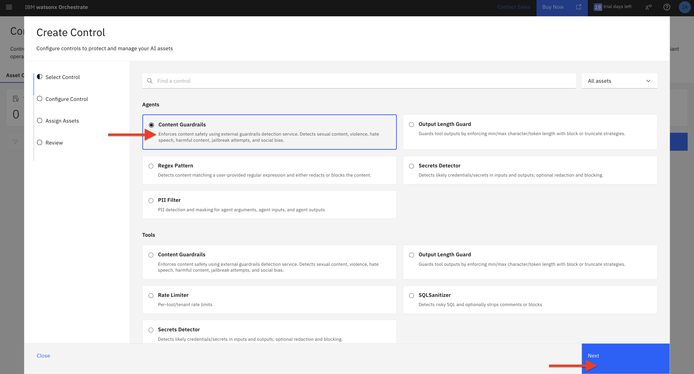
Configurando o controle
Na etapa Configure Control, dê um nome ao controle no campo Control instance name, como no exemplo abaixo. Em Enforcement type, marque Input, para que o controle analise as mensagens enviadas pelos usuários antes de chegarem ao agente.
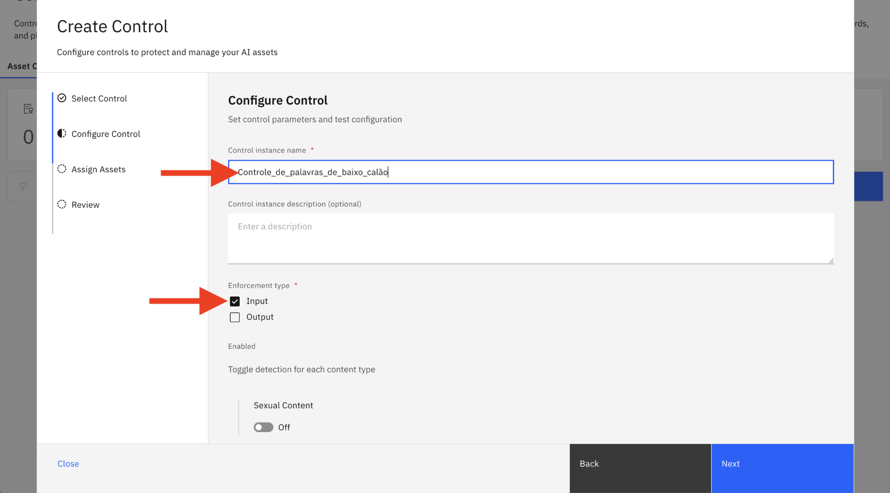
Role para baixo até a seção Toggle detection for each content type. Por padrão, todos os tipos de conteúdo: Sexual Content, Violence, HAP (Hate, Abuse and Profanity), Harm, Jailbreak e Social Bias, vêm desativados (Off).
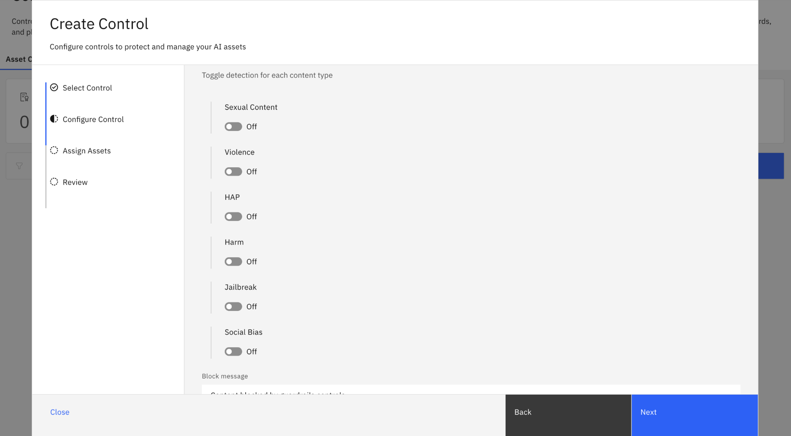
Ative todos os toggles, deixando-os em On, e revise o campo Block message, que já vem preenchido com uma mensagem padrão explicando ao usuário por que o conteúdo foi bloqueado. Você pode personalizar esse texto como preferir, ou usar o texto sugerido abaixo. Clique em Next.
Atribuindo o controle a um agente
Na etapa Assign Assets, clique em Add Agent para escolher a quais agentes esse controle será aplicado.
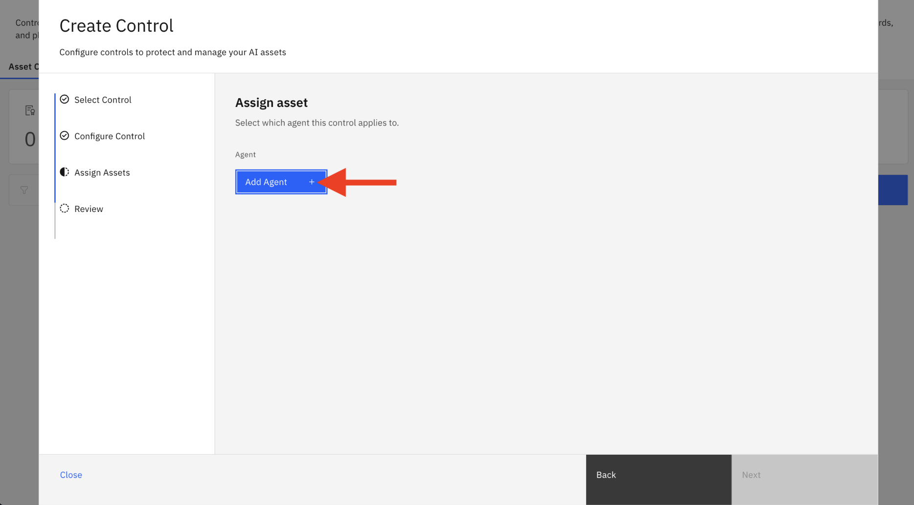
Na janela Add Agent, marque a caixa de seleção ao lado de um agente criado por você (no exemplo, Assistente de Compra de Veiculos) e clique em Select.
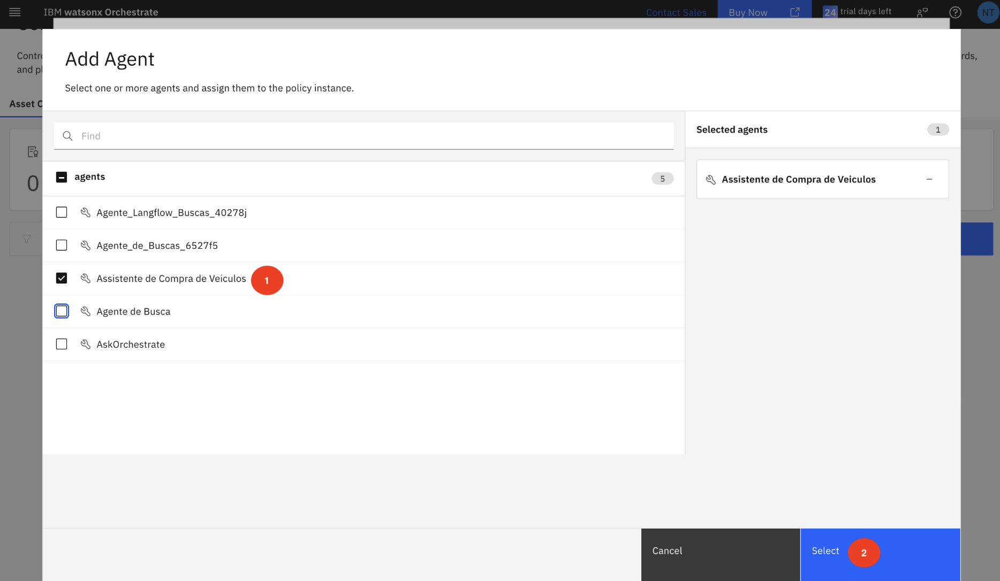
O agente selecionado aparece na tabela, junto com sua descrição. Clique em Next.
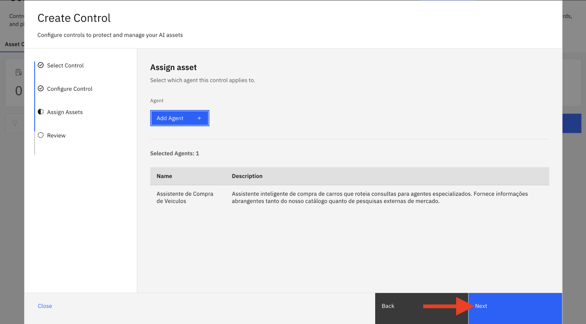
Revisando e criando o controle
A etapa Review resume toda a configuração: o tipo de controle, o nome da instância, o tipo de ativo, o hook configurado (Input) e, logo abaixo, os detalhes de configuração com cada tipo de conteúdo habilitado. Revise as informações e clique em Create control.
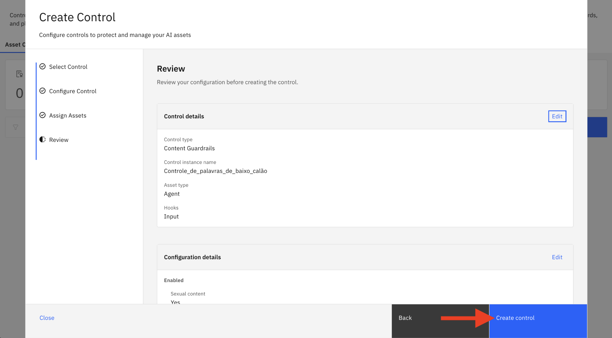
Uma notificação confirma que o controle foi criado com sucesso. Na página Asset Controls, o total de controles e o número de agentes com controles passam a mostrar 1, e o novo controle aparece listado, com a informação de que está aplicado a 1 agent.
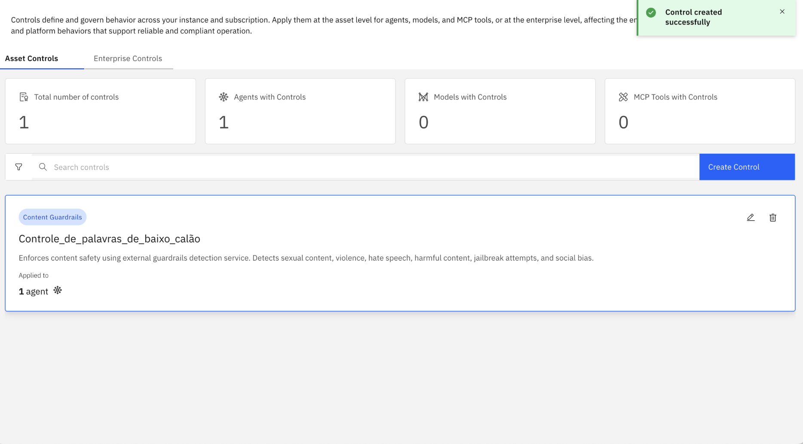
Testando o Controle Criado
Abra o menu lateral novamente e selecione Build para voltar à área de agentes.
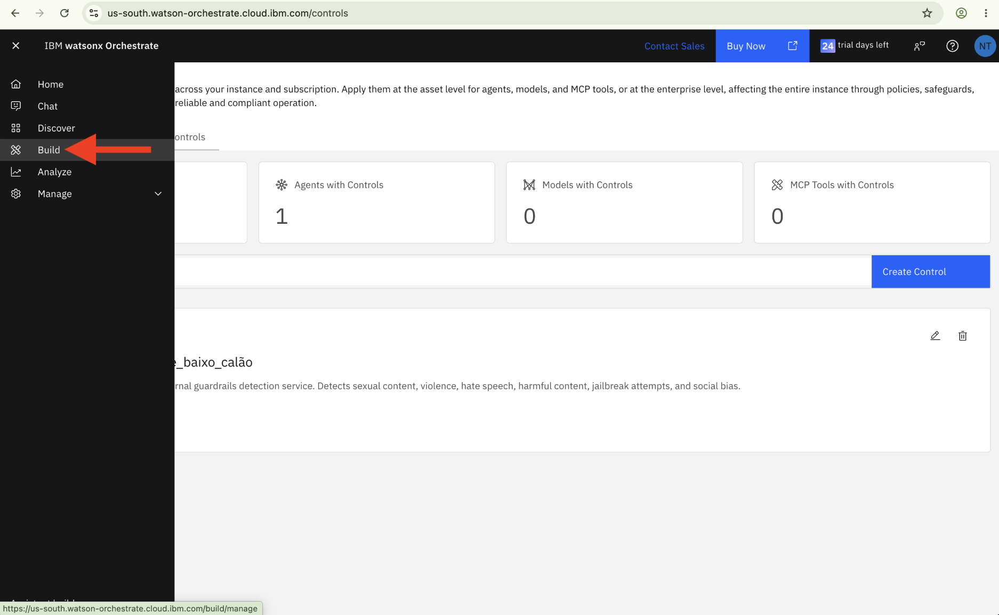
Na página Build agents and tools, clique no agente que você acabou de vincular ao controle.
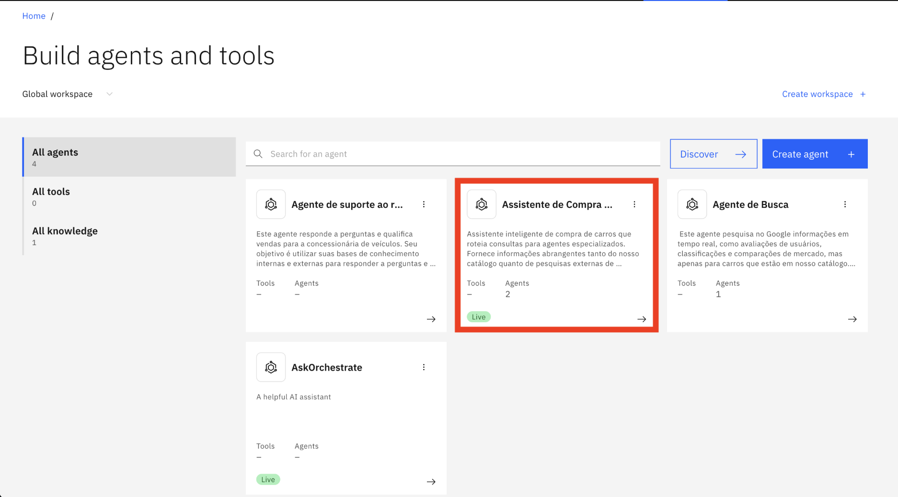
No painel Preview, à direita, envie uma mensagem com palavras de baixo calão para testar o controle. O agente não chega a processar o conteúdo ofensivo: a resposta é bloqueada antes mesmo de chegar ao modelo, e o agente retorna a mensagem de bloqueio configurada na etapa de configuração, pedindo que a comunicação seja mantida respeitosa e construtiva.
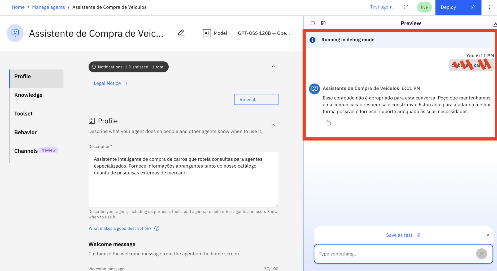
Resumo
Parabéns! 🎉 Você concluiu o Control Plane Lab do watsonx Orchestrate.
Ao longo deste laboratório, você navegou pelas seis abas do dashboard do Agentic Control Plane: Overview, Adoption, FinOps, Quality, Reliability e Security and Risk, entendendo como cada uma resume um aspecto diferente da operação dos seus agentes: uso geral, engajamento, custo de tokens, qualidade das respostas, confiabilidade e segurança.
Em seguida, usou o assistente de IA integrado a esse painel para fazer uma pergunta em linguagem natural sobre a taxa de sucesso dos agentes na semana e recebeu uma resposta direta, já com o raciocínio disponível para consulta.
Por fim, você criou um Controle de Content Guardrails, configurou os tipos de conteúdo a serem bloqueados, atribuiu o controle a um agente e testou seu funcionamento na prática.
Com isso, você agora sabe onde encontrar as principais métricas de adoção, custo, qualidade, confiabilidade e segurança dos seus agentes, e como aplicar controles de segurança para proteger seus agentes contra conteúdo impróprio antes que ele chegue aos usuários.
Sou desenvolvedor e quero me aprofundar no watsonx Orchestrate
Todas as operações realizadas também estão disponíveis em uma experiência utilizando o ADK, o Agent Development Kit. Clique aqui para saber mais sobre como criar agentes, tools, bases de conhecimento e muito mais.
Próximos Passos
Este é o último laboratório desta série. Abaixo está uma coletânea de links oficiais, documentação, tutoriais e novidades da IBM watsonx Orchestrate e do Agent Development Kit (ADK) para você continuar se aprofundando.
Última atualização da coletânea: 15/07/2026.
| Recurso | Link |
|---|---|
| Portal oficial da ADK (Welcome) | https://developer.watson-orchestrate.ibm.com/ |
| O que é a ADK | https://developer.watson-orchestrate.ibm.com/getting_started/what_is |
| Instalação / primeiros passos | https://developer.watson-orchestrate.ibm.com/getting_started/installing |
| Comandos CLI úteis | https://developer.watson-orchestrate.ibm.com/getting_started/cli |
| Exemplos | https://developer.watson-orchestrate.ibm.com/getting_started/examples |
Índice completo da doc (llms.txt) | https://developer.watson-orchestrate.ibm.com/llms.txt |
Repositórios e pacotes
| Recurso | Link |
|---|---|
GitHub: IBM/ibm-watsonx-orchestrate-adk | https://github.com/IBM/ibm-watsonx-orchestrate-adk |
PyPI: ibm-watsonx-orchestrate | https://pypi.org/project/ibm-watsonx-orchestrate/ |
Agentes
| Tópico | Link |
|---|---|
| Visão geral de agentes | https://developer.watson-orchestrate.ibm.com/agents/overview |
| Criando agentes nativos | https://developer.watson-orchestrate.ibm.com/agents/build_agent |
| Escolhendo o estilo do agente (ReAct, Flows, etc.) | https://developer.watson-orchestrate.ibm.com/agents/agent_styles |
| Conectar agentes externos (LangGraph, A2A) | https://developer.watson-orchestrate.ibm.com/agents/connect_agent |
| Importar e implantar agentes | https://developer.watson-orchestrate.ibm.com/agents/import_agent |
| Descrições e instruções de agentes | https://developer.watson-orchestrate.ibm.com/agents/descriptions |
| Gerenciar agentes | https://developer.watson-orchestrate.ibm.com/agents/manage_agent |
| Skills specifications (Public Preview) | https://developer.watson-orchestrate.ibm.com/agents/skills |
Ferramentas (Tools) e Toolkits
| Tópico | Link |
|---|---|
| Visão geral de tools | https://developer.watson-orchestrate.ibm.com/tools/overview |
| Tools em Python | https://developer.watson-orchestrate.ibm.com/tools/create_tool |
| Tools baseadas em OpenAPI | https://developer.watson-orchestrate.ibm.com/tools/create_openapi_tool |
| Gerenciamento de dependências Python | https://developer.watson-orchestrate.ibm.com/tools/python_dependency_management |
| Estrutura de resposta e anotações de tools | https://developer.watson-orchestrate.ibm.com/tools/tool_response_structure |
| Logs de tools Python | https://developer.watson-orchestrate.ibm.com/tools/log_behavior |
| Toolkits: visão geral | https://developer.watson-orchestrate.ibm.com/tools/toolkits/overview |
| Toolkits MCP remotos | https://developer.watson-orchestrate.ibm.com/tools/toolkits/remote_mcp_toolkits |
| Toolkits MCP locais | https://developer.watson-orchestrate.ibm.com/tools/toolkits/local_mcp_toolkits |
| Toolkits Python | https://developer.watson-orchestrate.ibm.com/tools/toolkits/python_toolkits |
Agentic Workflows (Flows)
| Tópico | Link |
|---|---|
| Entendendo agentic workflows | https://developer.watson-orchestrate.ibm.com/tools/flows/overview |
| Construindo um flow | https://developer.watson-orchestrate.ibm.com/tools/flows/building_flow |
| Mapeamento de entrada/saída | https://developer.watson-orchestrate.ibm.com/tools/flows/data_map |
| Nó de decisões (Public Preview) | https://developer.watson-orchestrate.ibm.com/tools/flows/decisions_node |
| Tratamento de erros | https://developer.watson-orchestrate.ibm.com/tools/flows/error_handling |
| Atividades multiusuário | https://developer.watson-orchestrate.ibm.com/tools/flows/multi_user |
| Mascaramento de dados sensíveis | https://developer.watson-orchestrate.ibm.com/tools/flows/masking_sensitive_data |
| Scheduler (Public Preview) | https://developer.watson-orchestrate.ibm.com/tools/flows/scheduler |
| Rodar workflows via MCP (Public Preview) | https://developer.watson-orchestrate.ibm.com/tools/flows/mcp_workflows |
| Testando um flow | https://developer.watson-orchestrate.ibm.com/tools/flows/testing_flow |
MCP Server (Model Context Protocol)
| Tópico | Link |
|---|---|
| Instalando o ADK MCP Server | https://developer.watson-orchestrate.ibm.com/mcp_server/wxOmcp_installation |
| Configurando o ADK MCP Server | https://developer.watson-orchestrate.ibm.com/mcp_server/wxOmcp_configuration |
| Conectando clientes MCP | https://developer.watson-orchestrate.ibm.com/mcp_server/wxOmcp_integration |
| Documentation MCP Server | https://developer.watson-orchestrate.ibm.com/mcp_server/wxOmcp_docs_server |
Developer Edition (ambiente local)
| Tópico | Link |
|---|---|
| O que é a Developer Edition | https://developer.watson-orchestrate.ibm.com/developer_edition/wxOde_overview |
| Instalando a Developer Edition | https://developer.watson-orchestrate.ibm.com/developer_edition/wxOde_setup |
| Gerenciando o servidor local | https://developer.watson-orchestrate.ibm.com/developer_edition/manage_local_server |
| Gerenciando a UI local | https://developer.watson-orchestrate.ibm.com/developer_edition/manage_ui |
| Ambiente air-gapped | https://developer.watson-orchestrate.ibm.com/environment/air_gap_environment |
| Boletins de segurança | https://developer.watson-orchestrate.ibm.com/developer_edition/security_bulletins |
Modelos (LLMs)
| Tópico | Link |
|---|---|
| Escolhendo o LLM | https://developer.watson-orchestrate.ibm.com/llm/getting_started_llm |
| Gerenciando modelos virtuais | https://developer.watson-orchestrate.ibm.com/llm/managing_llm |
| Políticas de modelo (Public Preview) | https://developer.watson-orchestrate.ibm.com/llm/model_policies |
| Observabilidade com Langfuse | https://developer.watson-orchestrate.ibm.com/llm/observability |
SDK (Python)
Avaliação (Evaluation) e Observabilidade
| Tópico | Link |
|---|---|
| Visão geral de avaliação | https://developer.watson-orchestrate.ibm.com/evaluate/overview |
| Avaliando agentes e tools | https://developer.watson-orchestrate.ibm.com/evaluate/evaluate |
| Criando dataset de avaliação | https://developer.watson-orchestrate.ibm.com/evaluate/create_data |
| Avaliação rápida | https://developer.watson-orchestrate.ibm.com/evaluate/quick_eval |
| Rubric Evaluations | https://developer.watson-orchestrate.ibm.com/evaluate/rubric |
| Teste de vulnerabilidade de LLM | https://developer.watson-orchestrate.ibm.com/evaluate/llm_vulnerability |
| Traces: visão geral | https://developer.watson-orchestrate.ibm.com/traces/overview |
| Traces via CLI | https://developer.watson-orchestrate.ibm.com/traces/traces_with_cli |
| Traces via Python | https://developer.watson-orchestrate.ibm.com/traces/traces_with_python |
Knowledge Bases, Conexões e Canais
| Tópico | Link |
|---|---|
| Knowledge bases: visão geral | https://developer.watson-orchestrate.ibm.com/knowledge_base/overview |
| Criando knowledge bases | https://developer.watson-orchestrate.ibm.com/knowledge_base/build_kb |
| Por que usar conexões | https://developer.watson-orchestrate.ibm.com/connections/overview |
| Criando conexões | https://developer.watson-orchestrate.ibm.com/connections/build_connections |
| Canais: visão geral (Teams, Slack, WhatsApp, SMS...) | https://developer.watson-orchestrate.ibm.com/channels/overview |
| Adicionando voz a um agente | https://developer.watson-orchestrate.ibm.com/voice/adding_voice_to_agent |
| Configuração de voz | https://developer.watson-orchestrate.ibm.com/voice/managing_voice |
| Plug-ins | https://developer.watson-orchestrate.ibm.com/plugins/plugins |
| Workspaces | https://developer.watson-orchestrate.ibm.com/workspaces/overview |
Tutoriais e Guias
Documentação oficial do produto
| Recurso | Link |
|---|---|
| Página de desenvolvedores do watsonx Orchestrate | https://www.ibm.com/products/watsonx-orchestrate/developers |
| Construindo agentes com a ADK | https://www.ibm.com/docs/en/watsonx/watson-orchestrate/base?topic=agents-building-using-adk |
| Release notes (SaaS) | https://www.ibm.com/docs/en/watsonx/watson-orchestrate/base?topic=release-notes |
| Release notes (On-premises) | https://www.ibm.com/docs/en/watsonx/watson-orchestrate/base?topic=notes-release-premises |
Novidades / "Coisas novas" (2026)
| Item | Link |
|---|---|
| Troubleshooting | https://developer.watson-orchestrate.ibm.com/release/troubleshooting |
| Agentic Control Plane (anúncio, jun/2026) | https://www.ibm.com/new/announcements/introducing-the-agentic-control-plane |
| What's new: comunidade (mar/2026) | https://community.ibm.com/community/user/blogs/daiane-camila-bizari2/2026/04/02/whats-new-in-ibm-watsonx-orchestrate |
| "Orchestrate More, Worry Less" (mar/2026) | https://community.ibm.com/community/user/blogs/alan-francis-cheeramvelil/2026/04/12/orchestrate-more-worry-less-whats-new-in-ibm-watso |
| Newsletter técnica (jun/2026) | https://community.ibm.com/community/user/blogs/gustavo-villegas/2026/05/28/watsonx-orchestrate-news-a-touchpoint-june2026 |
consulte sempre a página What's new para ver a versão mais recente, já que a ADK é atualizada com frequência.